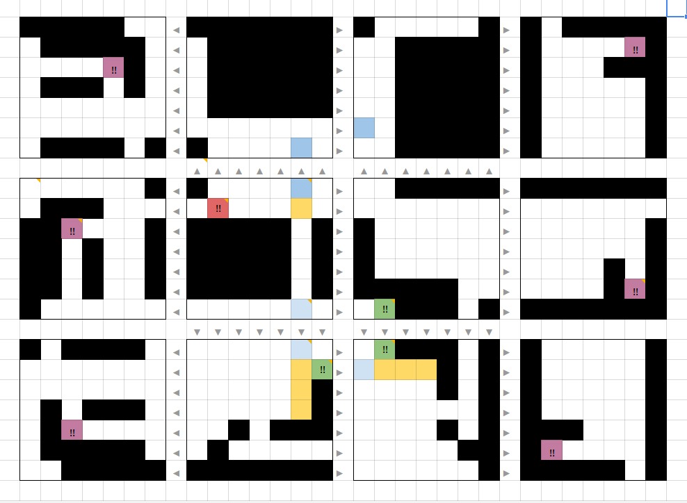
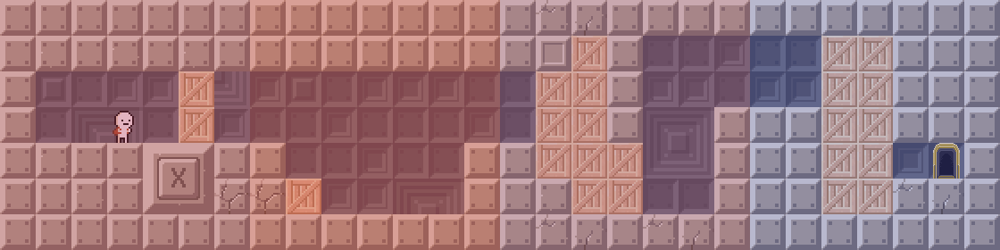
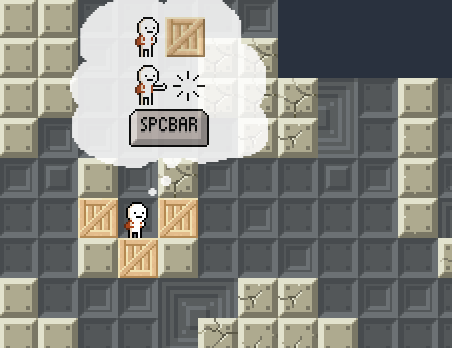

BOX!
Programming: Jeremy Cytryn, Renchu Song, Sam Chen and Will Peck
User Experience Design and Art: Natalie Diebold and me
Music: Brigid Choi

We wanted to build a puzzle game that would challenge the player to think in a different way than they
were accustomed to. The result was BOX!, a mind bender that forces players to navigate through the faces
of a cube from different gravitational perspectives.
Goals
The task was to create an original flash game in the course of a semester. The flash game format
allowed us to leverage an existing "deployment circuit" (Newgrounds, Kongregate etc.) of flash game sites to release prototypes and iterate on
them based on collected player analytics and user feedback.
In the brainstorming phase, one of our programmers demonstrated how a 2D shape could traverse across the edges of a cube, and end up on the face it started on in a completely different orientation. We latched onto the idea.
We identified a target audience of players aged 18-40, who play flash games for leisure. These players are casual gamers who will stop playing when the game stops being fun. Keeping this in mind, we established that our design goals would be to:
- Teach the player the core game mechanics through a well calibrated learning curve and clever level design
- Provide increasingly difficult challenges for the player's spatial/lateral thinking abilities
Prototyping
Our initial ideas came together in the form of a paper prototype. Playertesters were encouraged to "think out loud" as they played through our prototype, and vocalize how they planned to complete levels.
This prototype revealed that at larger level sizes,
players began to lose sense of orientation and place within the box. 7*7 was established
as a size small enough so that players were comfortable navigating around, large enough so we could have interesting level design and interactions.
Level design
The next phase, the creation of a technical prototype focused heavily on level design. Every team member proposed ideas for a set of levels that would introduce all the mechanisms in order as well as intuitively teach the player how the spatial orientation aspect of the game worked..
The technical prototype was evaluated by watching players in real time. Players were then asked to fill a survey regarding how difficult they found each mechanism as well as core gameplay.

Stumbling Blocks

Game mechanics are taught through reinforcement. What then, is the best way to teach a game mechanic-say, building a block, in the first place?
In the above level, the player is required to build a block to jump on after they fall in the small pit.
Collecting player analytics allowed us to we overlay
heatmaps on all levels; red (warmer) signifies more time spent on a face.
In the level above, players were spending a disproportionate amount of time on the second face; they weren't learning the new mechanics, despite our efforts to display them on various parts of the screen.
Solutions
We had to seamlessly incorporate the mechanism instructions into the gameplay. I suggested and designed a series of text bubbles that would appear when a player was confronted with a challenge for the first time, or they took too long completing a challenge.
Data collected from A/B testing revealed less time spent on each level, and a smaller player fall off rate per level, when the thought bubbles took the place of the control displays we had previously.
BOX! can be played on Kongregate. We are still tweaking the game, so as always, C&C is very appreciated!
